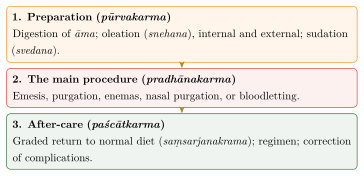
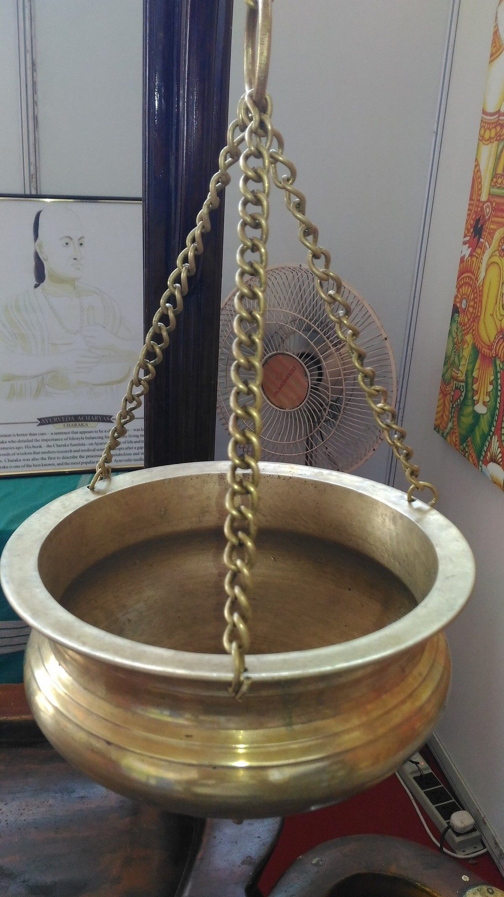
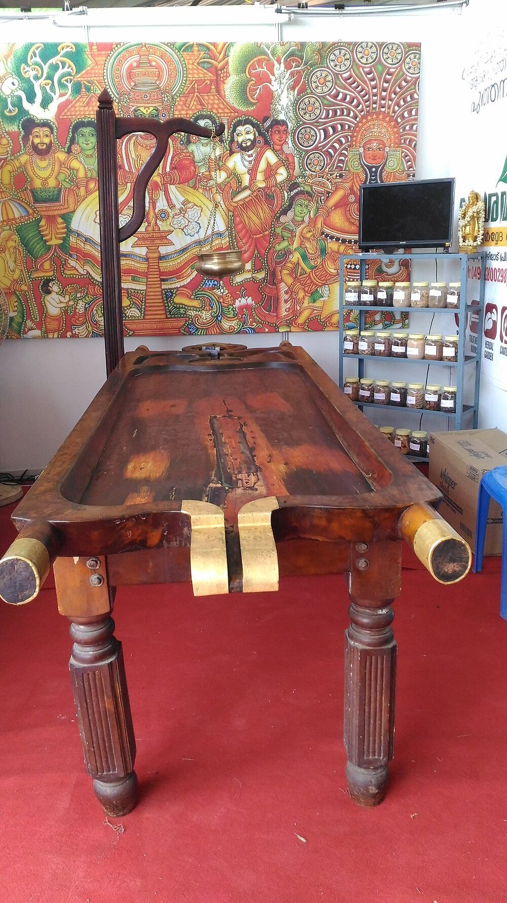

Chapter 7: Pañcakarma: The Purification Therapies¶
doṣāḥ kadācit kupyanti jitā laṅghanapācanaiḥ
jitāḥ saṃśodhanair ye tu na teṣāṃ punarudbhavaḥ
Doṣas subdued by fasting and digestives may sometimes flare up again; but those subdued by purification do not arise again.
— Caraka Saṃhitā, Sūtrasthāna 16.20
7.1 Purification and Pacification¶
Classical therapy has two main strategies. “Pacification” (śamana) restores balance within the body by diet, drugs and regimen. “Purification” (śodhana) expels the excess doṣas from the body by the nearest route: upwards through the mouth, downwards through the anus, or through the nose. The compendia regard purification as the more radical and lasting treatment, as the verse above claims, but also as the more dangerous, and they surround it with elaborate rules about who may receive it, how the patient is to be prepared, and how complications are to be recognised and corrected.
The “five actions” (pañcakarma) are counted differently by the two schools. For Caraka they are emesis (vamana), purgation (virecana), the decoction enema (nirūha or āsthāpana), the oil enema (anuvāsana) and nasal purgation (nasya or śirovirecana). The surgical school of Suśruta counts the two kinds of enema as one and adds bloodletting (raktamokṣaṇa). In modern practice the term “pañcakarma” is used loosely for a much wider range of procedures, including the oil therapies developed in Kerala.
7.2 The Stages of Treatment¶
A course of purification therapy has three stages, shown in Figure 7.1.

7.2.1 Oleation (Snehana)¶
Before purification the patient is “oleated”. Internal oleation consists in drinking ghee, oil, marrow or animal fat, often medicated, over a period of days until the signs of adequate oleation appear: softness of the body, oily stools, aversion to fat. External oleation is massage with oil. Oleation is thought to loosen the doṣas from the tissues and to bring them towards the alimentary tract, from which they can be expelled. Caraka devotes a chapter (Ca.Sū. 13) to the four kinds of fat, the times, forms and indications of oleation, and the signs of its deficiency and excess.
The texts distinguish pure fat taken by itself (accha) from fat mixed into food, gruel or other preparations (vicāraṇā), which Caraka recommends for those who cannot tolerate pure fat. They describe the signs of adequate oleation—the expulsion of flatus, a kindled digestive fire, oily and unformed stools, softness and smoothness of the body and an aversion to fat—and the signs of excess, which include pallor, heaviness, numbness, indigestion, salivation and diarrhoea. Oleation is forbidden in a long list of conditions, among them indigestion, kapha disorders with excess fat, recent fever, pregnancy and certain forms of poisoning.
7.2.2 Sudation (Svedana)¶
After oleation the patient is made to sweat. Caraka describes thirteen kinds of sudation using fire and ten kinds without fire (Ca.Sū. 14), summarised in Table 7.1.
| Kind | Examples |
|---|---|
| With fire (13) | application of heated boluses (saṅkara); lying on a heated bed of grain (prastara); steam conducted through a tube (nāḍī); pouring of warm liquids (pariṣeka); immersion in a warm bath (avagāhana); a heated sweating-house (jentāka); lying on a heated stone slab (aśmaghna); a trench heated with embers beneath the bed (karṣū); a closed hut (kuṭī); heated ground (bhū); a pot of hot decoction beneath the bed (kumbhī); a heated pit (kūpa); and a bed heated by a smouldering fire below (holāka) |
| Without fire (10) | exercise, a warm room, heavy coverings, hunger, much drinking, fear, anger, poultices, fighting and the heat of the sun |
Suśruta groups sudation into four kinds: by direct heat, by steam, by poultice and by warm liquids. The texts warn that sudation is dangerous for some patients, and that excessive sweating causes thirst, fainting and burning.
7.3 The Main Procedures¶
Table 7.2 summarises the classical scheme of the main procedures.
| Procedure | Route | Chiefly for | Examples of classical indications |
|---|---|---|---|
| emesis (vamana) | mouth (upwards) | kapha | cough, dyspnoea, nausea, some skin diseases and fevers |
| purgation (virecana) | anus (downwards) | pitta | jaundice, skin diseases, abdominal swellings, worms |
| decoction enema (nirūha) | rectum | vāta | disorders of vāta, distension, pain, retention |
| oil enema (anuvāsana) | rectum | vāta | dryness, wasting, chronic vāta disorders |
| nasal treatment (nasya) | nose | head and senses | headache, catarrh, diseases above the collar-bone |
| bloodletting (raktamokṣaṇa) | skin and vessels | blood, pitta | skin diseases, abscesses, swellings, gout-like joint disease |
7.3.1 Emesis (Vamana)¶
Emesis is the treatment for disorders of kapha, which is concentrated in the upper body. After preparation, the patient is given an emetic drug—the texts consider the fruit of madana (Catunaregam spinosa) the best—and the physician watches the vomiting, judging its adequacy by the number of bouts, the quantity and the appearance of pitta at the end. The Kalpasthāna of the Caraka Saṃhitā gives a chapter to each of six emetic drugs, most of them of uncertain identity (Section 3.9). Caraka’s list of conditions for which emesis is indicated includes cough, dyspnoea, some fevers, nausea, skin diseases, swellings and disorders of the throat; among those for whom it is forbidden are the weak, the very young and old, the obese, pregnant women, those with heart disease or bleeding disorders, and those exhausted by fasting, grief or sexual activity.
7.3.2 Purgation (Virecana)¶
Purgation is the treatment for disorders of pitta. The purgative drugs of the texts include trivṛt (Operculina turpethum), āragvadha (Cassia fistula), castor oil and, for strong purgation, the latex of snuhī (Euphorbia). The physician judges the adequacy of purgation by the number of motions, their quantity and the appearance of kapha at the end. The Kalpasthāna devotes six chapters to purgative drugs (Section 3.9), and the texts rank purgatives by strength and warn that the strongest, such as the latex of snuhī, are to be used only in particular conditions and never on the weak. Purgation is described as the best treatment for pitta, and it was used, among other things, for jaundice, skin diseases, abdominal swellings, worms and fevers of pitta origin.
7.3.3 Enemas (Basti)¶
The enema, administered originally with a bladder (basti) attached to a nozzle, is the treatment above all for disorders of vāta, whose chief seat is the colon. Caraka extols it: some physicians, he reports, call it half of all therapy, and some the whole of it (Ca.Si. 1.39–40). The texts distinguish the decoction enema (nirūha or āsthāpana), prepared from a decoction of drugs with other ingredients, from the oil enema (anuvāsana), which is retained for a longer time; courses of treatment alternate the two. The Siddhisthāna is largely devoted to enemas. It describes the apparatus—a nozzle of metal, bone or wood attached to the bladder of an animal—and the manner of administration, lists the faults of the nozzle, the bladder and the administration that cause injury or failure, and gives many formulae for enemas suited to particular disorders, including “nourishing” enemas of milk and meat soup. A small, daily oil enema (mātrābasti) was considered safe even for the weak and the aged. A separate procedure, the “upper enema” (uttarabasti), introduced medicated liquids into the bladder or the uterus.
7.3.4 Judging the Result¶
For every procedure the texts distinguish three outcomes: proper action (samyagyoga), inadequate action (ayoga) and excessive action (atiyoga). After proper purgation, for example, the channels are clear, the senses refreshed, the body light, the digestive fire kindled and the disease relieved; after inadequate purgation the patient feels heavy, nauseated and uneasy, and the disease persists; after excessive purgation there is faintness, thirst, prolapse, bleeding, cramps and, at worst, death. The emphasis on judging the patient’s response, rather than following a fixed schedule, is characteristic of the compendia, and it reflects an awareness that these procedures could do real harm.
7.3.5 Nasal Purgation (Nasya)¶
“The nose is the gateway to the head,” Vāgbhaṭa says (AH Sū. 20.1), and drugs introduced into it are thought to act on the head and the parts above the collar-bone. The texts distinguish purgative nasya with pungent drugs, which causes discharge, from nourishing and pacifying forms with oils, milk or ghee, and describe a light daily form (pratimarśa) as part of the regimen of the healthy. Caraka lists several ways of administering medicines through the nose—as drops of oil (navana), as the juice of a crushed paste (avapīḍa), as a powder blown into the nostril through a tube (dhmāpana), as smoke, and as the light daily application—and gives rules about the times of day and seasons when nasal treatment should and should not be given.
7.3.6 Bloodletting (Raktamokṣaṇa)¶
The surgical school regards bloodletting as a primary therapy for disorders of the blood and of pitta. Suśruta describes the use of leeches (jalaukā; Chapter 4); of horns and gourds for suction; of scarification; and of venesection (sirāvyadha), which he calls “half the treatment” in surgery, as the enema is in medicine (Su.Śā. 8.23). The surgical texts lay down when and on whom bloodletting may be performed: not in very cold, very hot or cloudy weather, not on the weak, the very young or old, pregnant women or those with swelling of the whole body, and with careful attention to the quantity of blood removed and the signs of excess. They recognise that excessive bleeding causes weakness, fainting, convulsions and death. Bloodletting was also central to Greek, Arabic and early modern European medicine, where it has long since been abandoned except for a few specific conditions; medicinal leeches are still used in some reconstructive surgery.
7.4 Lesser Procedures¶
Besides the five main purifications, the compendia describe many smaller procedures, some of them part of the daily regimen and some used as treatments. In medicated smoking (dhūmapāna), wicks made of drug pastes wrapped around a reed are dried, lit and smoked through a tube, inhaled through the mouth or the nose; the texts distinguish “unctuous”, “moderate” and “purgative” smoking and prescribe it after meals, bathing, sneezing and other activities to prevent disorders of vāta and kapha in the head. Liquids are held in the mouth without movement (gaṇḍūṣa) or swilled and spat out (kavala). Oil is applied to the head (mūrdhataila) in four forms of increasing strength—anointing, pouring, a soaked pad, and oil retained within a cap (AH Sū. 22)—and poured into the ears (karṇapūraṇa). The eyes receive collyria, eye-drops and the retention of ghee within a ring of dough (tarpaṇa).
7.5 After-care and Complications¶
Purification is thought to leave the digestive fire weak; Caraka compares it to a small fire that is built up gradually with grass and dung (Ca.Si. 1.12–13). The patient therefore returns to normal food gradually, through a sequence of thin rice gruel (peyā), thick gruel (vilepī), unseasoned and seasoned pulse soups (yūṣa) and unseasoned and seasoned meat soups (māṃsarasa), the number of meals at each stage depending on the strength of the purification (saṃsarjanakrama).
The compendia are frank about the dangers. Caraka’s Siddhisthāna (Ca.Si. 6–7) describes the complications of emesis, purgation and enemas: inadequate or excessive evacuation, exhaustion, thirst, fainting, bleeding, prolapse, pain, distension and others, with their correction. The texts also list the people for whom purification is unsuitable, among them the very young and the very old, the weak and emaciated, pregnant women, and patients with certain diseases.
Health and Safety Note
The purification procedures are invasive and carry real risks. This book describes them historically and gives no instructions for carrying them out; the risks are set out in Section 12.7.
7.6 Who Received Purification?¶
The elaborate procedures of the compendia—with their specially built houses, attendants, stores of drugs and weeks of preparation and recovery—were designed for kings and wealthy householders. Caraka’s description of the house of treatment (Chapter 3) makes this clear. Most people in pre-modern India could not have afforded such treatment, and the texts themselves recommend simpler measures for the poor. Purification in its full classical form was thus a therapy of the elite, and the large-scale provision of pañcakarma in hospitals and commercial centres is a modern development.
Today, pañcakarma is offered in the departments of government Āyurvedic hospitals and colleges, in private hospitals and clinics, and in resorts catering for tourists. Official bodies have issued guidelines for the procedures and for the facilities and staff required, but practice varies widely, and in the commercial sector there is little independent oversight.
7.7 Purification and the Seasons¶
The compendia also recommend purification for the healthy at the appropriate seasons, to remove the doṣas before they cause disease: emesis in spring, when kapha is aggravated; purgation in autumn, for pitta; and enemas in the rains, for vāta. This is the basis of the modern practice of offering “seasonal pañcakarma” to healthy clients, a practice that has become an important part of health tourism in India.
7.8 The Kerala Therapies¶
Many of the procedures now advertised as pañcakarma come from the medical tradition of Kerala (Section 5.3), where they are known as keraḷīya cikitsā. They involve the prolonged application of warm oils, milk or medicated preparations to the body (Figures 7.2 and 7.3), and are distinct from the five classical purifications. In dhārā a continuous stream of oil, buttermilk or another liquid is poured over the body, or over the forehead in śirodhārā; in piḻiccil the body is bathed in streams of warm oil while it is massaged; in ñavarakkiḻi it is massaged with cloth boluses of rice cooked in milk and herbal decoction; in śirovasti oil is retained on the head inside a leather cap; and in local vastis warm oil is held over the lower back, a knee or another part within a ring of dough.
Much of this tradition was developed and transmitted in the families of Kerala physicians, and was organised and popularised in the twentieth century by institutions such as the Arya Vaidya Sala at Kottakkal, founded by P. S. Varier in 1902.




7.9 Evacuation in Comparative Perspective¶
Treatment by evacuation was not peculiar to India. Greek, Roman and Arabic physicians, working with their own humoral theory, purged, induced vomiting, administered enemas and let blood to remove excess or corrupted humours, and these practices remained central to European medicine until the nineteenth century. Bloodletting was abandoned in Europe largely because early statistical studies, beginning with those of the French physician Pierre Louis in the 1830s, showed that it did not help patients with pneumonia and other fevers. The history is a reminder that a therapy may be practised by intelligent physicians for two thousand years, and be consistent with a coherent theory, and still be useless or harmful. The only way to find out is to test it.
Today, Āyurvedic purification is often marketed internationally as “detoxification”. The term is borrowed from modern medicine, where it refers to the treatment of poisoning and drug dependence. There is no good evidence that emesis, purgation, enemas or oil treatments remove unspecified “toxins” from healthy people, and the healthy body has its own effective means—the liver and kidneys—of eliminating waste.
7.10 Modern Evidence¶
Purification therapies and Kerala oil treatments have been studied in a number of clinical trials in India and elsewhere, for conditions such as psoriasis, arthritis, insomnia and anxiety. Most of these studies are small, many lack an adequate control group, the people assessing the results are often aware of the treatment, and few have been repeated independently. Some report benefit; for most conditions the evidence is not strong enough to support firm conclusions, and the risks are rarely reported systematically. Relaxing oil treatments such as śirodhārā may well be pleasant and calming, but that is a different claim from the claim that they cure disease. Good-quality research, with full reporting of adverse effects, is needed before these treatments can be recommended for any medical condition.
Summary
Purification expels the doṣas by the nearest route, after oleation and sudation have loosened them and before a graded return to ordinary food; the texts judge each procedure by its effect on the patient and describe its complications frankly. In its full classical form it was a therapy for the wealthy. Much of what is now offered as pañcakarma comes instead from the later oil therapies of Kerala, and modern evidence for either is limited.
Further Reading¶
The purification therapies are described in Caraka’s Sūtra-, Kalpa- and Siddhisthāna (see the translations of Sharma and Wujastyk (Sharma 1981–1994; Wujastyk 2003)). On the Kerala tradition and its modern development, see the essays in (Wujastyk and Smith 2008).